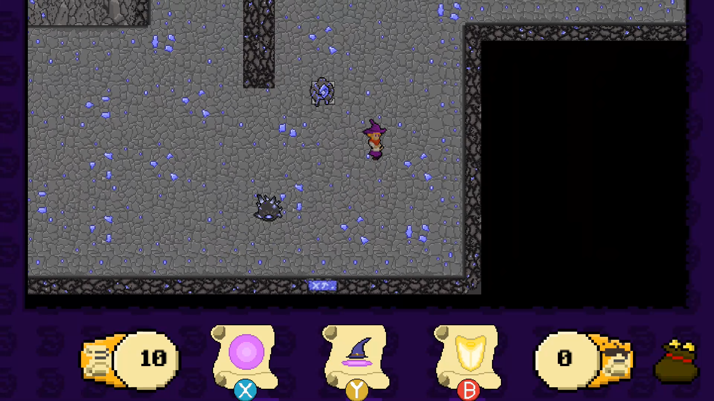
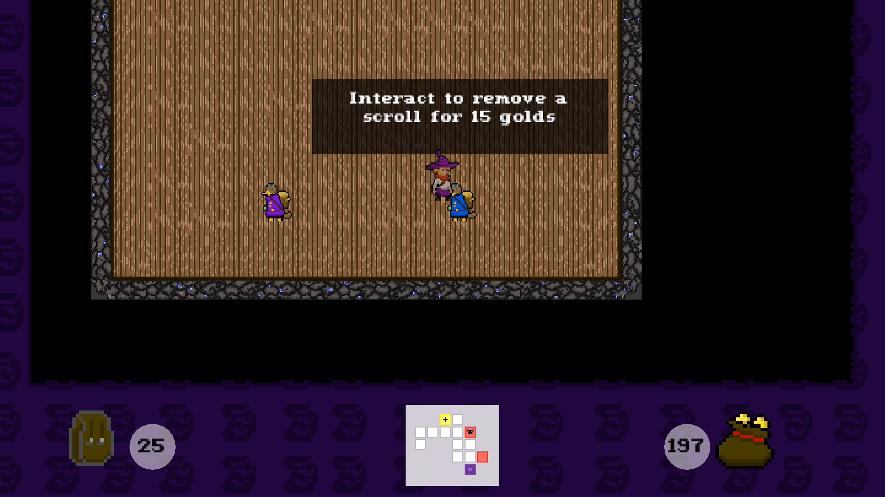

Dungeon Scroller
Un jeu de deckbuilding mêlé à un top-down shooter dans un univers de magie
Le projet de fin de première année
Dungeon Scroller est le projet réalisé en fin de première année d'études à E-Artsup. Il a été réalisé en trois semaines, avec une équipe de 5 personnes, au sein de laquelle j'avais le rôle de lead programmer. Il s'agit d'un jeu qui vise à mêler les décisions stratégiques et gestions du hasard des jeux de deckbuilding avec l'intensité et les réflexes demandés par un shooter en vue de dessus, et donc en temps réel. Le joueur va donc incarner une apprentie magicienne, qui a des difficultés à apprendre des sorts, et doit constament lire ses parchemins pour réaliser des incantations.
Le jeu peut se diviser en deux temps, à savoir en combat et hors combat. Pour éviter la surcharge d'informations, le jeu se structure sous la forme d'un donjon avec différentes salles, chacune comprenant des ennemis, qui une fois vaincus donnent de l'or et des parchemins (notre équivalent des cartes). Certaines salles sont des boutiques, qui permettent d'utiliser l'or afin d'acheter des parchemins, d'en dupliquer, ou d'en supprimer de son deck. En combat, les trois choses auxquelles le joueur doit prêter attention sont son placement, le choix du sort à lancer, et le timing de lancement. En effet, pour éviter une manipulation complexe pour le joueur et faciliter son expérience de jeu, nous avons pris le parti de supprimer l'aspect de visée qui est en général central dans les top down shooters, afin de mettre plus d'importance sur le choix du sort, et son utilisation au moment oppurtun. À chaque sort, on propose au joueur trois parchemins tirés de son deck, qui seront tous remplacés lorsque le joueur en aura choisi un à utiliser.
